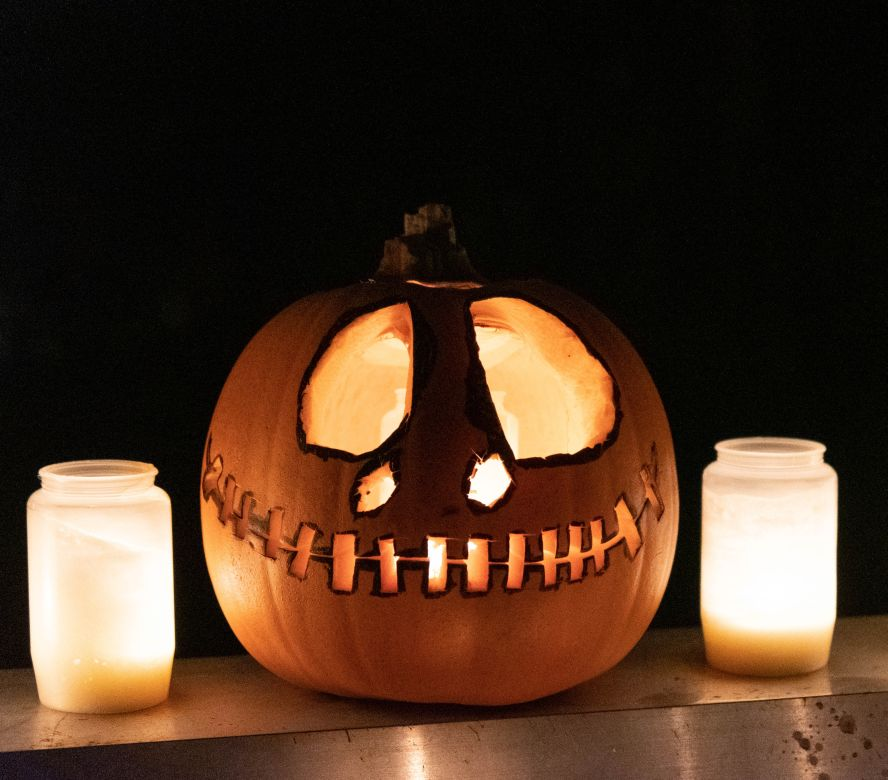
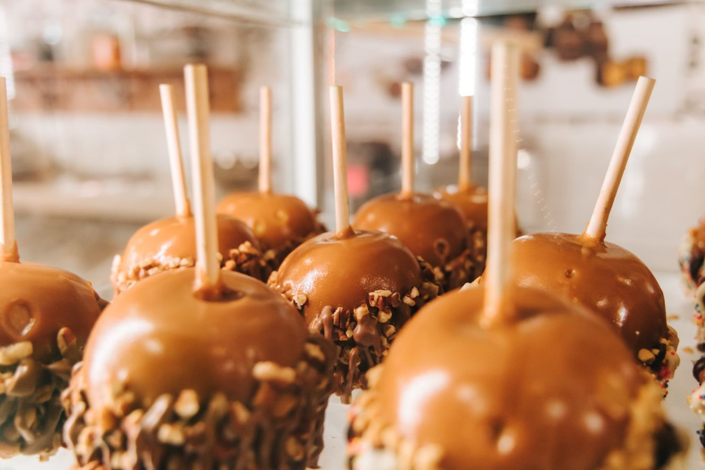

Helovinas (dar užrašoma Helovynas, VLKK taip pat siūlo naudoti pavadinimus Vaiduoklių šventė arba Šiurpnaktis) − šventė, vykstanti spalio 31 d. JAV šios šventės metu vaikai dėvi specialius kostiumus ir vaikšto po žmonių namus, sakydami: „Pokštas arba saldainis“. Daugelis iš moliūgų išsiskaptuoja žibintus. Taip pat pasakojamos baisios istorijos, žiūrimi siaubo filmai, krečiamos šunybės. Pavadinimas Helovinas (angl. Halloween, sutraukta iš All Hallows' Eve 'Visų šventųjų vakaras') kilęs iš senosios anglų kalbos.

Veikiausiai šiandien švenčiamo Helovino pagrindinis šaltinis − tai keltiška Sauino šventė. Keltų naujieji metai prasidėdavo lapkričio 1 d. O šventė, kuri prasidėdavo Naujųjų metų išvakarėse, būdavo rengiama keltų mirties viešpaties Samhaino garbei. Ši šventė pažymėdavo šalčio, tamsos ir gedimo sezono pradžią. Natūraliai ją pradėta asocijuoti su žmogaus mirtimi. Keltai tikėjo, kad Samhainas tą vakarą leisdavo mirusiųjų sieloms sugrįžti į savo namus. Samhaino šventės vakare žmonės užgesindavo savo namų židinius. Druidai iš ąžuolo (jiems švento medžio) šakų sukraudavo milžinišką naujųjų metų laužą. Jame jie degindavo paaukotus gyvūnus. Tada kiekviena šeima nuo to laužo vėl užkurdavo savo šeimos židinį. Šventės metu žmonės kartais vilkėdavo specialiais kostiumais, pagamintais iš gyvulių odos ir galvų. Iš paaukotų gyvulių liekanų jie spėdavo ateinančių metų ateitį.

Helovino metu paplitę karameliniai obuoliai. Tai yra obuoliai ant pagaliukų, išmirkyti karamelėje ar cukraus tirpale.Tradiciškai būdavo įprasta juos duoti po namus vaikščiojantiems kostiumuotiems vaikams, panašiai, kaip Lietuvoje Užgavėnių metu būdavo dalinami blynai. Tačiau šis paprotys sparčiai nyksta, tėvams neišleidžiant vaikų dėl paplitusių mitų apie dalijamus užnuodytus ar smeigtukų prikaišiotus obuolius.[3] Nors apsinuodijimų iš tiesų yra pasitaikę, praktiškai visais tokiais atvejais kalti būdavo patys apsinuodijusių vaikų tėvai.Airijoje iki šių laikų išlikęs paprotys kepti tam tikrą specialų pyragą su razinomis – barmbraką (airiškai Báirín Breac). Prieš kepimą į tešlą įdedama moneta ar žiedas. Pasak papročio, kas ras savo pyrago gabalėlyje tą įdėtą žiedą, per ateinančius metus susiras savo tikrąją meilę.
Svarbus Helovino maistas, ypač JAV, yra moliūgas. Ir patiekalai iš moliūgo, ir moliūgo sėklos, ir moliūgo formos saldainiai ar kitoks maistas. Dažniausiai atėjusiems persirengusiems vaikams yra dalinami saldainiai.